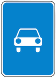
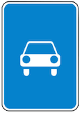

10.1. Водитель должен вести транспортное средство со скоростью, не превышающей установленного ограничения, учитывая при этом интенсивность движения, особенности и состояние транспортного средства и груза, дорожные и метеорологические условия, в частности видимость в направлении движения. Скорость должна обеспечивать водителю возможность постоянного контроля за движением транспортного средства для выполнения требований Правил.
При возникновении опасности для движения, которую водитель в состоянии обнаружить, он должен принять возможные меры к снижению скорости вплоть до остановки транспортного средства.
10.2. В населенных пунктах разрешается движение транспортных средств со скоростью не более 60 км/ч, а в жилых зонах, велосипедных зонах и на дворовых территориях не более 20 км/ч. (абзац изменён в редакции Постановления Правительства РФ от 04.12.2018 № 1478)
Примечание. По решению органов исполнительной власти субъектов Российской Федерации может разрешаться повышение скорости (с установкой соответствующих знаков) на участках дорог или полосах движения для отдельных видов транспортных средств, если дорожные условия обеспечивают безопасное движение с большей скоростью. В этом случае величина разрешенной скорости не должна превышать значения, установленные для соответствующих видов транспортных средств на автомагистралях.
10.3. Вне населенных пунктов разрешается движение:
- мотоциклам, легковым автомобилям и грузовым автомобилям с разрешенной максимальной массой не более 3,5 т на автомагистралях — со скоростью не более 110 км/ч, на остальных дорогах — не более 90 км/ч; (в ред. Постановления Правительства РФ от 24.03.2017 № 333)
- автобусам, в которых места для сидения пассажиров оборудованы ремнями безопасности, предназначенным для перевозки исключительно сидящих пассажиров, - не более 90 км/ч, другим автобусам - не более 70 км/ч; (в ред. Постановления Правительства РФ от 06.10.2022 № 1769)
- легковым автомобилям при буксировке прицепа, грузовым автомобилям с разрешенной максимальной массой более 3,5 т на автомагистралях - не более 90 км/ч, на остальных дорогах - не более 70 км/ч; (в ред. Постановления Правительства РФ от 06.10.2022 № 1769)
- грузовым автомобилям, перевозящим людей в кузове, — не более 60 км/ч;
- автобусам, осуществляющим организованные перевозки групп детей, — не более 60 км/ч. (в ред. Постановлений Правительства РФ от 24.01.2001 № 67, от 06.10.2022 № 1769)
Примечание. По решению собственников или владельцев автомобильных дорог может разрешаться повышение скорости на участках дорог для отдельных видов транспортных средств, если дорожные условия обеспечивают безопасное движение с большей скоростью. В этом случае величина разрешенной скорости не должна превышать значения 130 км/ч на дорогах, обозначенных
знаком 5.1  , и 110 км/ч на дорогах, обозначенных
знаком 5.3 
.(примечание введено Постановлением Правительства РФ от 23.07.2013 № 621)
, и 110 км/ч на дорогах, обозначенных
знаком 5.3 
.(примечание введено Постановлением Правительства РФ от 23.07.2013 № 621)
10.4. Транспортным средствам, буксирующим механические транспортные средства, разрешается движение со скоростью не более 50 км/ч.
Тяжеловесным транспортным средствам, крупногабаритным транспортным средствам и транспортным средствам, осуществляющим перевозки опасных грузов, разрешается движение со скоростью, не превышающей скорости, указанной в специальном разрешении, при наличии которого в соответствии с законодательством об автомобильных дорогах и о дорожной деятельности допускается движение по автомобильным дорогам таких транспортных средств. (абзац изменен Постановлением Правительства РФ от 26.03.2020 № 341)
10.5. Водителю запрещается:
- превышать максимальную скорость, определенную технической характеристикой транспортного средства;
- превышать скорость, указанную на опознавательном знаке «Ограничение скорости», установленном на транспортном средстве;
- создавать помехи другим транспортным средствам, двигаясь без необходимости со слишком малой скоростью;
- резко тормозить, если это не требуется для предотвращения дорожно-транспортного происшествия.